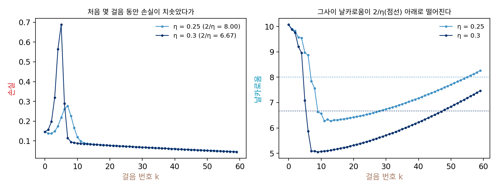
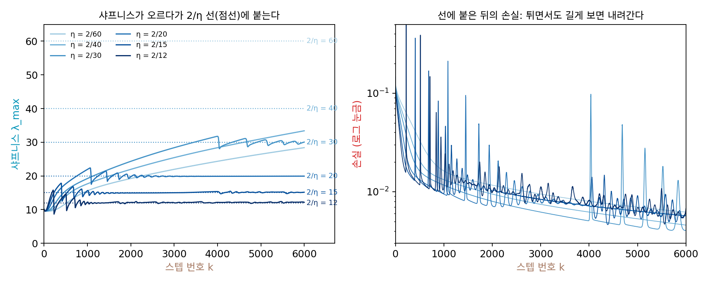
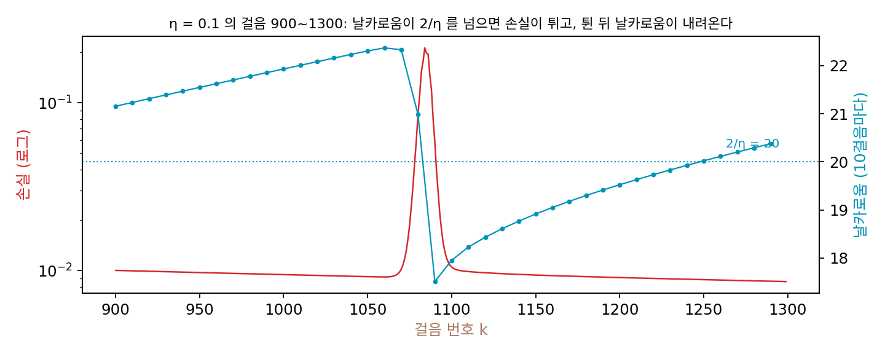
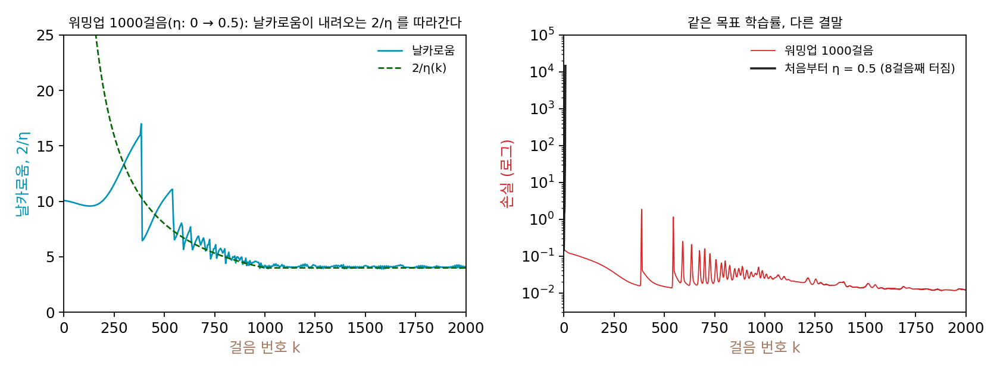

안정성의 가장자리: 샤프니스가 2/η 에 붙는다
이제 샤프니스를 잴 수 있다. 그릇에서는 샤프니스가 2/η를 넘는 순간 학습이 터졌는데, 그릇의 샤프니스는 어디서나 같았고 신경망의 샤프니스는 학습하는 동안 바뀐다. 학습률을 고정해 두고 학습하는 동안 샤프니스를 재 보면 어떻게 움직일까? 학습이 바닥에 다가가면서 샤프니스가 줄어든다면 2/η는 걱정할 일이 아니지만, 거꾸로 샤프니스가 커져서 2/η를 넘는다면 그릇에서처럼 터져야 한다. 그런데 이 장의 물음에서 보았듯 실제 학습은 손실이 오르내리면서도 터지지 않는데, 둘 사이에서 무슨 일이 일어나고 있을까?
역사: 「신경망은 전체 배치 경사하강으로 학습하는 일이 거의 없다」
샤프니스와 학습률의 관계는 확률적 경사하강이 어떤 바닥(극소)을 고르는지 묻던 사람들이 먼저 따졌다. 레이 우(Lei Wu), 차오 마(Chao Ma), 웨이난 E(Weinan E)는 2018년 신경정보처리시스템 학회(NeurIPS) 논문에서, 바닥이 경사하강에 대해 안정하려면 그 바닥의 샤프니스가 학습률로 정해지는 문턱 아래여야 한다는 데서 출발했다. 실제로 학습이 고른 바닥의 샤프니스가 2/η에 가까웠다.
2020년 아이터 레브코비치(Aitor Lewkowycz)와 동료들은 「딥러닝의 큰 학습률 국면: 투석기 기제」에서 반대쪽 끝을 보았다. 처음 자리의 샤프니스가 이미 2/η보다 크면 손실이 몇 스텝 동안 치솟는데, 그사이 샤프니스가 2/η 아래로 떨어지고 나서 학습이 다시 내려간다. 돌을 던져 올려 다른 자리에 떨어뜨리는 투석기에 빗대어 투석기 국면이라 불렀고, 처음 샤프니스가 λ₀일 때 이 일이 대략 2/λ₀와 4/λ₀ 사이의 학습률에서 생긴다고 분석했다. 이 장의 작은 신경망(처음 샤프니스 10.07)을 학습률 0.3으로 학습하면, 손실이 다섯 스텝 만에 0.1462에서 0.6880까지 오르는 동안 샤프니스가 7.08로 떨어지고, 여덟째 스텝에는 샤프니스 5.08, 손실 0.0949다.

이 조각들을 한 그림으로 모은 사람은 카네기멜런 대학의 제러미 코언(Jeremy Cohen)과 동료들이다. 그들의 2021년 국제 표현 학습 학회 논문 「신경망의 경사하강은 대개 안정성의 가장자리에서 일어난다」는 「신경망은 (전체 배치) 경사하강으로 학습하는 일이 거의 없다」는 문장으로 시작한다. 그래도 그들은 노이즈가 없는 가장 단순한 경우부터 보려고 전체 배치 경사하강을 골랐다. CIFAR-10 그림 5000장으로 폭 200의 tanh 은닉층 두 개짜리 신경망을 여러 학습률로 학습하며 샤프니스를 쟀더니, 샤프니스는 2/η보다 작은 동안 계속 오르고, 2/η에 닿은 뒤에는 학습이 끝날 때까지 「2/η에, 또는 바로 그 위에」 머물렀다. 그동안 손실은 짧게 보면 오르내리지만 길게 보면 꾸준히 내려갔다. 이 모습은 합성곱 신경망과 트랜스포머, 제곱 오차와 크로스 엔트로피에서도 나타났고, 그들은 2차 함수의 그림으로는 설명할 수 없다며 이론을 요청했다.
학습률 여섯 가지로 같은 신경망을 학습하기
코언과 동료들의 실험을 이 장의 작은 신경망으로 따라 해 보자. 같은 출발점(처음 샤프니스 10.07)에서 학습률만 바꿔 전체 데이터로 6000스텝씩 경사하강을 하고, 10스텝마다 파워 이터레이션(앞 방향에서 이어 20번)으로 샤프니스를 쟀다. 학습률은 2/η가 60, 40, 30, 20, 15, 12가 되게 골랐다.
| 2/η | η | 2/η의 98%에 처음 닿은 스텝 | 그 뒤 샤프니스 ÷ (2/η): 평균 [최소, 최대] | 그 뒤 손실이 오른 스텝 | 손실 (k = 1000, 3000, 6000) |
|---|---|---|---|---|---|
| 60 | 0.0333 | 닿지 않음 (6000스텝째 28.38) | 없음 | 0% | 0.01626, 0.00947, 0.00621 |
| 40 | 0.0500 | 닿지 않음 (6000스텝째 33.39) | 없음 | 0% | 0.01326, 0.00745, 0.00459 |
| 30 | 0.0667 | 3290 | 1.0036 [0.936, 1.059] | 17.5% | 0.01166, 0.00622, 0.00406 |
| 20 | 0.1000 | 720 | 0.9992 [0.876, 1.119] | 40.9% | 0.00947, 0.00795, 0.00571 |
| 15 | 0.1333 | 220 | 1.0064 [0.835, 1.189] | 42.9% | 0.00962, 0.00838, 0.00603 |
| 12 | 0.1667 | 110 | 1.0130 [0.721, 1.315] | 43.3% | 0.01145, 0.01116, 0.00679 |
어느 학습률에서도 샤프니스는 줄지 않고 오른다. 2/η = 30의 샤프니스는 0, 500, 1000, 2000스텝에서 10.07, 15.56, 19.22, 24.33이다. 샤프니스가 2/η보다 작은 동안에는 그릇의 약속대로 손실이 한 번도 오르지 않는다. 그러다 샤프니스가 2/η에 닿으면, 그릇이라면 터져야 할 샤프니스 = 2/η 지점에서 샤프니스가 더 오르지 않고 선에 붙는다. 붙어 있는 동안 손실이 오른 스텝이 17.5~43.3%나 되는데도 손실은 길게 보면 내려간다. 6000스텝 뒤의 헤시안 전체를 구해 보면 가장 큰 고윳값이 2/η = 30에서 30.0385(1.0013배), 20에서 19.9296(0.9965배)으로, 파워 이터레이션이 잰 값과 같다.
이렇게 샤프니스가 저절로 2/η까지 차오른 뒤 그 선 위아래에 머물고, 그동안 손실이 짧게는 오르내리면서도 길게는 내려가는 학습의 모습을 안정성의 가장자리 (샤프니스가 2/η 에 붙어 머무는 학습 / edge of stability)라 한다. 샤프니스가 차오르는 앞쪽 구간은 코언과 동료들이 따로 「점점 날카로워짐(progressive sharpening)」이라 불렀다.

선에 붙어 있는 동안의 한 구간(2/η = 20, 스텝 900~1300)을 확대하면, 샤프니스가 조금씩 올라 2/η를 넘는 동안 가장 크게 휜 방향의 배율이 1을 넘어 손실이 치솟는다. 치솟은 직후 샤프니스가 2/η 아래로 떨어지고 손실도 돌아오며, 손실이 튀는 일과 샤프니스가 내려앉는 일이 이렇게 함께 되풀이된다. 알렉스 데이미언(Alex Damian), 이샨 니차니(Eshaan Nichani), 제이슨 리(Jason D. Lee)는 2023년 국제 표현 학습 학회 논문 「스스로 안정되기: 안정성의 가장자리에서 경사하강의 암묵적 편향」에서 손실이 튀며 샤프니스가 내려앉는 이 되풀이를 손실의 3차 항으로 설명했다. 가장 크게 휜 방향으로 크게 흔들리면 3차 항이 샤프니스를 깎는 방향으로 파라미터를 밀고, 그래서 가장자리의 경사하강은 「샤프니스가 2/η를 넘지 않게 제한한 채 손실을 줄이는 경사하강」처럼 움직인다는 것이다.

ML에서: 학습률 워밍업
이 장의 물음에서 본 일, 곧 처음부터 쓰면 터지는 학습률이 천천히 올리면 끝까지 학습되는 일은 학습률 워밍업이라는 이름으로 널리 쓰인다. 프리야 고얄(Priya Goyal)과 동료들은 2017년 원고 「정확한 큰 미니배치 확률적 경사하강: 이미지넷을 한 시간에」에서 그림 8192장짜리 미니배치와 GPU 256개로 ResNet-50을 한 시간에 학습했다. 미니배치를 키운 배수만큼 학습률도 키웠는데(그들의 경우 0.1에서 3.2), 처음부터 3.2를 쓰는 대신 0.1에서 시작해 데이터를 다섯 번 도는 동안 스텝마다 같은 양씩 올려 3.2에 닿게 했다. 학습 초반에 신경망이 빠르게 바뀌는 동안에는 큰 학습률이 통하지 않는다고 보았기 때문이다. 저스틴 길머(Justin Gilmer)와 동료들은 2022년 국제 표현 학습 학회 논문 「학습 불안정성을 손실 곡률의 관점에서 보기」에서 워밍업이 곡률이 큰 곳을 피해 더 큰 학습률을 견디는 평평한 곳으로 학습을 옮겨 준다고 보았다.
이 장의 작은 신경망으로 확인해 보자. 목표 학습률을 0.5로 잡으면 2/η는 4로, 처음 샤프니스 10.07의 절반도 안 된다. 처음부터 0.5를 쓰면 8스텝째에 손실이 1.46 × 10⁴가 되어 터진다. 0에서 0.5까지 1000스텝 동안 곧게 올리면 끝까지 학습되어 4000스텝째 손실이 0.00467이다. 그동안 샤프니스는 처음 몇백 스텝 오르다가 300스텝째(학습률 0.1505, 2/η = 13.29) 2/η에 닿고, 그 뒤로는 내려오는 2/η 선을 따라 함께 내려와 4000스텝째 3.99에 머문다. 워밍업은 샤프니스가 가장자리를 따라 내려올 시간을 주는 것이다.

문제 4. 모래를 한 숟가락씩 부으면
탁자 위에 마른 모래를 한 숟가락씩 부어 더미를 쌓는다. 이 문제에서는 숟가락 하나를 부을 때마다 더미 옆면의 기울기가 1°씩 가팔라지고, 기울기가 35°를 넘는 순간 옆면이 무너져 내려 기울기가 3° 줄어든다고 하고, 처음 기울기는 30°라고 하자. (가) 숟가락을 열다섯 번 부은 뒤까지 기울기를 적어라. (나) 숟가락을 백 번 더 부으면 기울기는 어떻게 되는가? (다) 이 더미의 무엇이 샤프니스에, 무엇이 2/η에 해당하는가?

부을수록 가팔라지니까 백 번 더 부으면 기울기가 엄청 커지겠죠.

규칙대로 직접 따라가 볼까요?

31, 32, 33, 34, 35, 그다음 숟가락에서 36이 되자마자 무너져 33, 다시 34, 35, 33… 열다섯 번째 뒤엔 33이에요.
(나)는요? 백 번 더 부으면요?
그 뒤 백 번을 부어도 33과 35 사이만 맴돌고, 평균은 34예요. 모래는 계속 쌓이는데 기울기는 안 커지네요.

기울기는 35°라는 문턱까지는 저절로 올라가고, 문턱을 넘으면 무너져서 다시 문턱 아래로 내려와. 그래서 문턱 근처에 붙어 있어. 샤프니스도 2/η까지 차오르고, 넘으면 손실이 튀면서 내려앉았잖아.

무너지는 순간에 더미에는 무슨 일이 생기죠?

옆면이 한 번 크게 쏟아져요. 그게 손실이 치솟는 순간이에요. 쏟아진 뒤에도 모래는 버리지 않고 계속 쌓아 가니까, 손실이 길게 보면 내려가는 것과도 맞아요. 기울기가 샤프니스고 35°가 2/η예요. 문턱을 높이면, 그러니까 학습률을 낮추면 붙는 높이도 높아지고요.

과제를 미루다 마감 직전에 몰아서 하고, 끝나면 풀어졌다가 또 몰리는 저도 이 더미 같네요. 마감이 35° 문턱 구실을 하니까 무한정 늘어지지는 않아요.
문제 5. 튄 손실은 왜 다시 내려왔나
2/η = 20(학습률 0.1)으로 학습한 기록에서 10스텝마다 잰 샤프니스는 1000스텝째 21.932, 1060스텝째 22.369(가장 큼), 1080스텝째 20.982, 1090스텝째 17.509다. 손실은 1059스텝째 0.00917에서 1084스텝째 0.21185로 올랐다가 1100스텝째 0.01052로 돌아왔다. (가) 샤프니스가 22.369일 때 가장 크게 휜 방향의 한 스텝 배율은? 그 방향의 거리가 이 배율로만 자라면 손실(거리의 제곱에 비례)은 한 스텝에 몇 배가 되는가? (나) 샤프니스가 22.369에 머물렀다면 100스텝 뒤 그 방향의 손실은 몇 배가 되었을까? (다) 실제 기록과 비교해 무엇을 알 수 있는가? (풀어 본 뒤 위젯 2에서 2/η = 20을 골라 스텝 1000 언저리를 보자.)
배율은 |1 − 0.1 × 22.369| = 1.237이에요. 손실은 그 제곱이라 한 스텝에 1.53배요. 100스텝이면 1.53¹⁰⁰이니까… 3 × 10¹⁸배쯤 돼요. 터졌어야 하는데요?
실제 기록에서 손실은 얼마까지 올랐죠?

0.21185까지 올랐다가 0.01052로 돌아왔어요. 23배 오르고 끝났어요. 계산과 하나도 안 맞아요.
계산에서는 샤프니스가 22.369에 머문다고 놓았어. 그런데 1090스텝째 샤프니스는 17.509로 2/η = 20보다 작아. 그러면 배율이 |1 − 1.7509| = 0.751이라 그 방향의 거리가 스텝마다 줄어들어.
그럼 손실이 왜 다시 내려왔는지 한 문장으로 말하면요?
샤프니스가 17.509로 내려갔으니까… 손실이 불어나는 동안 파라미터가 샤프니스가 낮은 곳으로 옮겨 갔다는 거네요. 그곳에서는 같은 학습률이 안전해서 다시 내려온 거고요.
그럼 (나)의 계산은 무엇을 놓쳤죠?

2차 함수로 어림한 그림은 「샤프니스가 그대로」라는 가정 위에 서 있었어요. 샤프니스 자체가 파라미터에 따라 움직이니까, 그 가정이 깨지면 예측도 깨져요. 테일러 전개를 2차에서 끊었을 때 다음 항이 언제 중요해지는지 따지던 거랑 같아요.

그러니까 손실이 한 번 튀었다고 학습률을 바로 내릴 필요는 없는 거네요. 튐 자체가 샤프니스를 깎는 과정이니까요. 조교님이 첫 중간고사 망친 학생은 공부법을 바꿔서 기말에 오히려 잘 본다고 하던 게 생각나요.
문제 6. 워밍업은 얼마나 길어야 하나
작은 신경망의 처음 샤프니스는 10.07이고, 목표 학습률은 0.5다. 학습률을 k번째 스텝에 0.5(k + 1)/N으로 곧게 올리고 N스텝 뒤부터는 0.5로 둔다(N은 워밍업 길이). (가) 2/λ₀와 4/λ₀는 얼마인가? 워밍업 길이가 300스텝과 1000스텝일 때, 학습률이 2/λ₀를 넘는 스텝은? (나) 실제로 300스텝 워밍업은 188스텝째(학습률 0.315)에 터지고, 1000스텝 워밍업은 끝까지 학습된다. 300스텝 워밍업에서 샤프니스는 115스텝째 10.39로 2/η = 10.34를 처음 넘었고, 170스텝째에는 13.78인데 2/η는 7.02다. 1000스텝 워밍업은 300스텝째 샤프니스 13.38, 2/η 13.29다. 무엇이 달랐는가?
(가)는 2/10.07 = 0.1986, 4/10.07 = 0.3972요. 300스텝이면 119스텝째, 1000스텝이면 397스텝째에 학습률이 0.1986을 넘어요. 그럼 그 스텝까지는 샤프니스가 2/η보다 작으니 안전하겠네요.
1000스텝 워밍업이 2/η에 닿은 건 몇 스텝째였죠?
300스텝째요. 397스텝보다 일러요.
그사이 샤프니스는 어떻게 되어 있었죠?
10.07에서 13.38로 올라 있었어요. 학습률만 오르는 게 아니라 샤프니스도 혼자 차오르니까, 처음 샤프니스로 계산하면 안 되네요.
(나)를 보면 300스텝 워밍업은 샤프니스가 2/η를 넘은 뒤에도 13.78까지 계속 올랐어. 그동안 2/η는 10.34에서 7.02로 떨어지고. 170스텝째엔 샤프니스가 2/η의 거의 두 배야. 1000스텝 워밍업은 닿은 뒤 샤프니스가 선을 따라 내려왔고.

가장자리에 붙어 있던 샤프니스는 손실이 튀면서 깎여 내려왔어요. 그 깎는 일에도 스텝이 필요하겠죠?
아, 2/η 선이 너무 빨리 내려가면 샤프니스가 깎여 따라 내려올 시간이 없겠네요.
그럼 둘 사이가 벌어지고, 벌어지면 배율이 1을 훨씬 넘으니까 한 번 튈 때 너무 멀리 튀는 거야? 그게 188스텝째 터진 거고.
그러니까 워밍업의 길이는 샤프니스가 2/η 선을 따라 스텝마다 얼마나 내려올 수 있느냐로 정해지는 거예요. 극한을 잡을 때 두 수열이 얼마나 빨리 가는지 비교하던 거랑 같아요.
남의 코드에서 워밍업 스텝 수만 줄이면 학습이 빨라질 줄 알았는데, 워밍업 스텝 수가 곧 터지느냐 마느냐를 가르는 설정이었네요. 조교님이 실험 보고서 분량을 줄이라고 해서 측정 횟수를 줄였더니 결과가 안 맞았던 거랑 같아요.